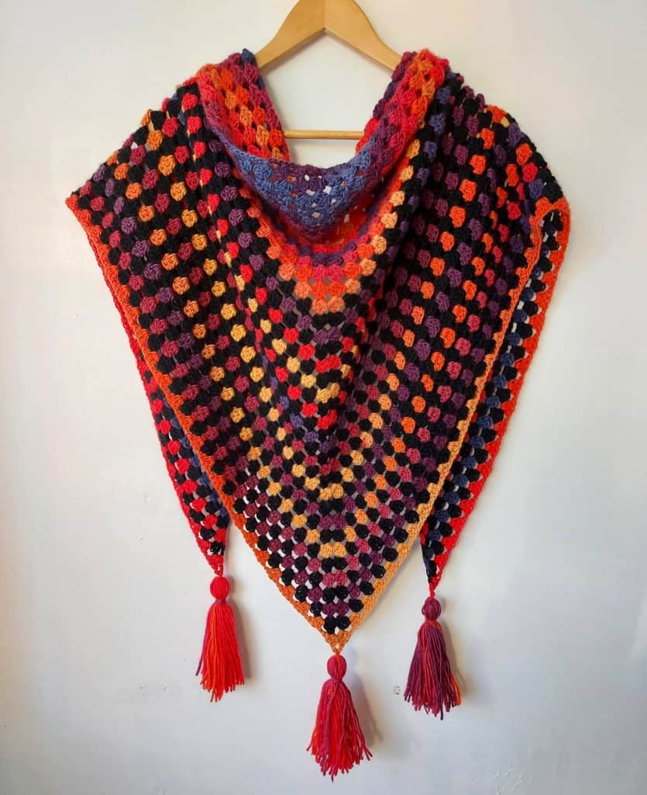
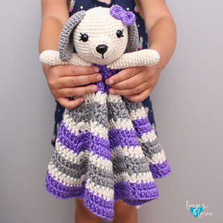
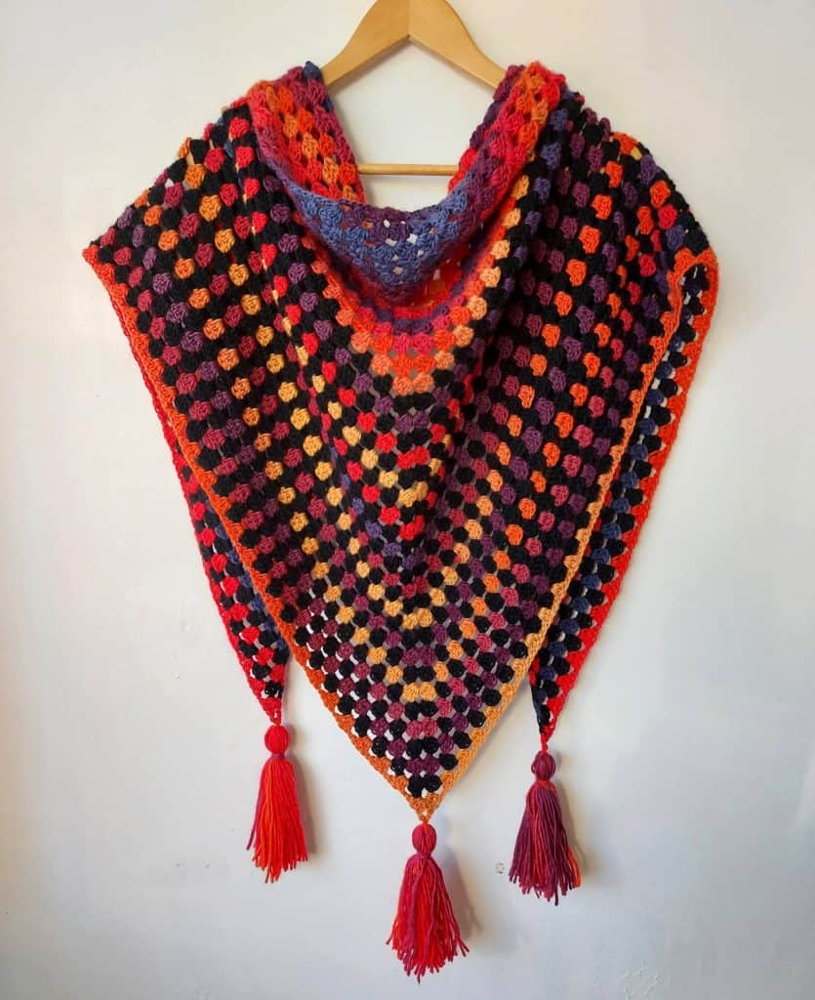
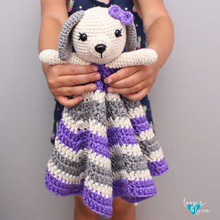

Crochet
What is Crocheting?
Crochet is a craft that involves creating fabric by interlocking loops of yarn or thread using a hooked needle. The word "crochet" itself is derived from the French word "croche," meaning hook. This versatile craft allows people to create a wide range of items, including clothing, accessories, home decor, and more. In crochet, you typically work with a single hook to pull loops of yarn through other loops, creating various stitches. The basic stitches include chain stitches, single crochet, double crochet, and others. By combining these stitches in different ways, crocheters can create intricate patterns and textures.
Fun facts about crocheting
Videos
You can find hundreds of crocheting tutorials online that teach you many different techniques and steps. Like these ones:
Craft gallery
Here you can find some cool projects you can create from crocheting! Scroll right to view some more images!
 





Good-to-knows before you start
You can buy equipment from your any crafts store, or from retailers such as Amazon. The essential equipment you will need to crochet are crochet hooks and yarn. Other materials can be used, depending on what you are making. Such as button, pom-poms and sequins!
Crocheting definitly takes time to get used to, and everyone has their own learning pace. So do not feel discouraged if you feel you aren't seeing desirable results straight away!